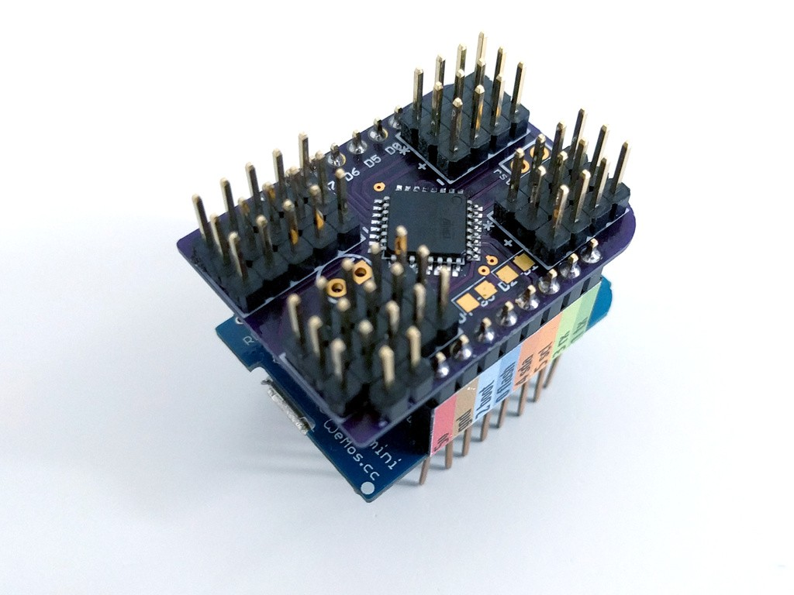

18-channel Servo Shield¶
Published on 2016-09-14 in Servo Breakout for WeMos D1 Mini.
The second approach is to actually use an ATmega328p chip communicating over I2C with the ESP8266, to generate PWM for 18 different servos. I had the code already from my project-9131 , so all I needed was a PCB for it. I considered using a Pro Mini here too, but finally decided that a bare atmega is enough – I don’t need an external oscilator, because neither the servo signal nor I2C are sensitive to timing differences.
So I received the PCBs from OSHPark, and assembled the shield. And of course I had a short between the 3.3V pin and the ground. One of the vias on my design got moved by mistake, and touched the ground fill. Fortunately that was easily fixed with a knife.
Then I connected my USBASP programmer, and with great help from @Christoph flashed the blink sketch, set the fuses to the right values, tested it, and then flashed my program.
First tests show that it works, except that for some reason I need to lower the frequency of the I2C bus to 150kHz from the default 400kHz, otherwise the slave gets stuck with its SDA pulled down as soon as it receives the second byte of transmission. I will poke at it some more and hopefully figure out what’s wrong there.